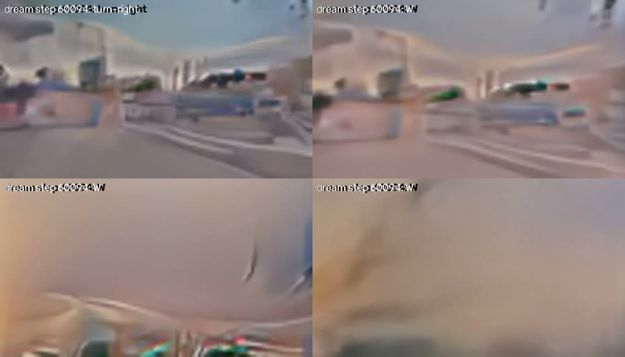
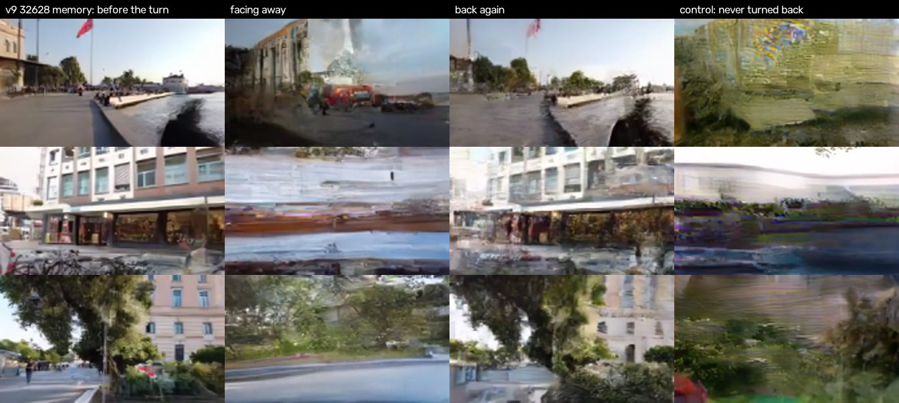
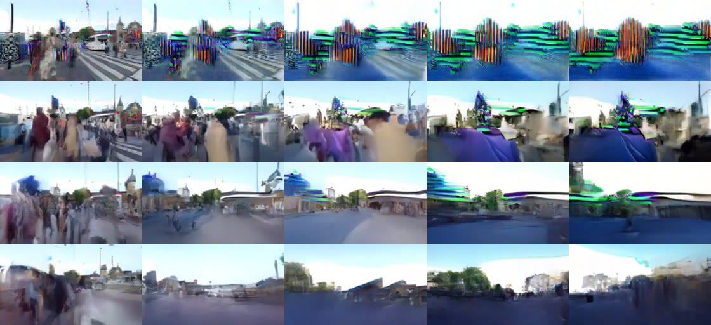

Dream World
What if a model could dream a street while you walk down it? You hold W and it makes up the next frame, then the next, about 23 times a second. There’s no map and no 3D world in there. Every frame on this page was dreamed by my model!
- Model
- Diffusion U-Net
- Size
- 51M parameters
- Picture
- 96 x 168 pixels
- Memory
- 24 frames (16.8 s)
- Dream speed
- about 23 frames a second
- Training video
- 14.4 hours, 10 sources
- Hardware
- One RTX 5090
So what is it?
Dream World is a world model. It looks at the last few seconds it remembers and the key you’re pressing, and it paints the next frame from noise. Then it does that again. The picture is tiny (96 by 168 pixels) so it can keep up with you on one GPU.
It learned from 14.4 hours of first-person city walks. Nobody told it what a street is. It just watched a LOT of walking.
Version zero melted
My first model held a street for a few seconds and then melted into beige soup. Every wrong pixel gets fed back in as memory for the next frame, so small mistakes pile up fast. Most of this project has been a fight against the melt!

The bug that was in every version
This one hid from me until after version 4. The model never sees pure static while it trains. Even the noisiest training picture still has a faint trace of the real frame in it, and the model had learned to read that trace. But I was starting every dreamed frame from PURE static. So its very first guess was bad, and everything after that was built on a bad guess.
The fix needed no training at all. Start each new frame from the last frame plus static. On the same weights, first-frame error dropped from 0.221 to 0.037, and a clean walk went from 4 seconds to 11.
My scores were lying to me
For a while my score said some dreams “never melted” for 20 seconds. I looked at them. They were ripples! A screen full of wavy texture counted as a clean street. When I checked my old meters against real video, they called real footage melted about a third of the time.
So I trained a tiny judge (half a million parameters) on early dream frames against late ones, and I use that now. It’s the reason I trust any number on this page.
Remembering where it’s been
Turn around in a dream, turn back, and the street you left should still be there. At first it wasn’t. The model happily invented a brand new place. So I gave it a panorama memory: it keeps what it has seen at each heading and uses that as a hint when you look that way again. My turn-back score went from 0.13 to 0.88, and a full spin went from 0.02 to 0.87.

Things that DIDN’T work
- A bigger model. I trained one with 96.5 million parameters from scratch. For the same minutes of training it tied the small one.
- More training. This one surprised me. Long walks got WORSE the longer I trained, even while the one-step score kept getting better (0.428 after 3,000 steps, 0.512 after 6,000, 0.549 after 9,000, and lower is better).
- Twice the resolution. Version 11 dreams at 192 by 336. It scored worse than version 9, so version 9 is still the one I play.
It still isn’t solved. After 25 to 30 seconds a dream turns into what I call texture soup, and walking only covers about half the ground that real footage does.
The dream dial
While you walk you can turn a dial for how much static each frame starts from. Turn it down and the dream breaks into neon stripes. Turn it up and the street holds together, but it drifts into a different place.

Where the video came from
The model trained on the Walking Tours dataset (Venkataramanan et al., ICLR 2024, CC-BY 4.0), which is long first-person walks through cities, plus one wildlife video. The footage went through a face-blurring step first. The model and the data stay on my PC. This is a personal research project and it’ll never be sold.